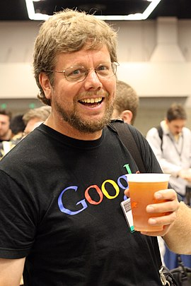

Биография
Гвидо ван Россум родился 31 января 1956 года в Гааге, Нидерланды. Окончил Амстердамский университет по специальности «математика и информатика» в 1982 году. Затем Россум работал в различных исследовательских институтах, в том числе Голландском центре математики и информатики (Амстердам), Национальном Институте Стандартов (США) и Корпорации национальных исследовательских инициатив. В 2001 году ван Россум получил премию Free Software Award, а в 2002 году — премию Нидерландской ассоциации профессионалов UNIX. В 2006 году Гвидо ван Россум был признан Ассоциацией вычислительной техники «выдающимся инженером». В декабре 2005 года ван Россум был принят на работу в Google, где он разработал на Python веб-приложение для рецензирования кода Mondrian. Также принимал активное участие в разработке компанией Google сервиса хостинга сайтов и web-приложений Google App Engine. 7 декабря 2012 года был последним днём работы в Google. C 1 января 2013 года приступил к работе в Dropbox. 12 июля 2018 года ван Россум объявил о своём намерении покинуть пост «великодушного пожизненного диктатора» проекта по разработке языка программирования Python. В октябре 2019 года покинул Dropbox и вышел на пенсию. В ноябре 2020 года на своём Твиттер-канале заявил о своём решении присоединиться к подразделению разработки компании Microsoft.
Личная жизнь
Гвидо ван Россум — брат Юста ван Россума, шрифтового дизайнера и программиста. Юст создал шрифт, который используется в логотипе «Python Powered». В настоящее время Гвидо живёт в Калифорнии с женой-американкой Ким Нэп (англ. Kim Knapp) и их сыном Орлейном (Orlijn).
https://ru.wikipedia.org